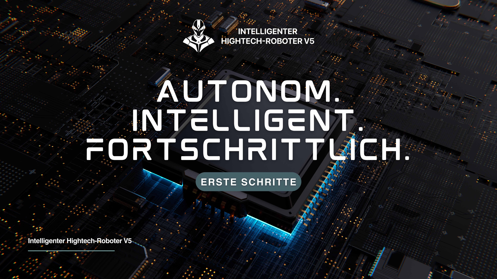

Über Aktien, ETFs, Futures und digitale Assets hinweg mit frei kombinierbaren Faktoren.
AI-gestützte Quant Intelligence
Globale Märkte in Echtzeit erkennen und präzise Quant-Entscheidungen treffen
Wir kombinieren Deep Learning, natürliche Sprachverarbeitung und jahrzehntelange Buy-Side-Expertise, um eine durchgängige Plattform zu liefern, die Discovery, Validierung und Ausführung automatisiert.
- 24/7 KI-gestützte Marktüberwachung
- 120 ms Signallaufzeit bis zum Desk
- 99,9 % Datenqualität mit Audit-Trail
Quant Research as a Service
Multi-Asset-Strategiebibliothek · Automatisiertes Backtesting · Mehrsprachige Kollaboration
Institutionelle Ergebnisse
Von Szenario-Strategien bis Risk Controls – messbare Resultate aus einer Hand
Tethys Investment Alliance begleitet Family Offices, Broker-Dealer und Hedgefonds dabei, differenzierte Portfolios aufzubauen und sie in vollautomatisierte Execution-Infrastrukturen einzubetten.
Der KI-Engine verkürzt den Weg von der Hypothese zur produktiven Strategie drastisch.
Integrierte Audit-Trails, Anomalieerkennung und Risk Playbooks für globale Aufsichten.
Plattform im Detail
Modularer Aufbau, exakt auf Ihre Research-Pipelines abgestimmt
AI-Signalfabrik
Aggregiert Datenquellen, extrahiert Features in Echtzeit und generiert erklärbare Handelssignale.
- Früherkennung von Anomalien und Risikosignalen
- Lifecycle-Governance für jede Strategie
- Visualisierte Modell-Performance in Echtzeit
Quant Execution Hub
Direkte Anbindung an Broker und Exchanges für Algo-, Basket- und Auto-Rebalancing-Orders.
- Rollenbasierte Zugriffe über mehrere Konten
- Intelligentes Order-Routing mit Slippage-Kontrolle
- Live-Nettovermögen und Allokationsansichten
Insight Visual Center
Dashboards verwandeln KI-Erkenntnisse in abgestimmte Entscheidungen über Teams hinweg.
- Szenario-KPIs und individuelle Reports
- Marktbriefings aus natürlicher Sprache
- Nahtlose Integration via API und Webhooks

Research Operating System
Jede Minute des Research-Teams ist messbar, nachvollziehbar und skalierbar
Ein konfigurierbares Operating System zerlegt den Research-Prozess in wiederverwendbare Bausteine und baut ein strategisches Wissensgraph-Backbone auf.
- Genehmigungs- und Audit-Trails für funktionsübergreifende Teams
- End-to-End KPI-Tracking vom Insight bis zur Ausführung
- Mehrsprachige Schnittstellen für globale Zusammenarbeit
Führungsteam
Ein erfahrenes Research-Team liefert Ergebnisse im Co-Pilot-Modell

Robert Miller
Mitgründer & Chief Strategy Officer; verantwortete die Risikorahmen mehrerer nordamerikanischer Multi-Milliarden-Quantfonds.
„Wir liefern vollständige Transparenz vom Signal bis zur Ausführung.“
Thomas Kurz
Mitgründer & Chief Scientist; spezialisiert auf Machine Learning und Quant Finance mit Fokus auf Echtzeit-Entscheidungsrahmen.
„Unser Auftrag ist es, institutionelle Entscheidungen schneller, smarter und belastbarer zu machen.“
Jetzt starten
Bauen Sie heute das nächste intelligente Research-Ökosystem
Holen Sie sich einen dedizierten Consultant und Testzugang, um KI-gestützte Strategieproduktivität sofort zu erleben.